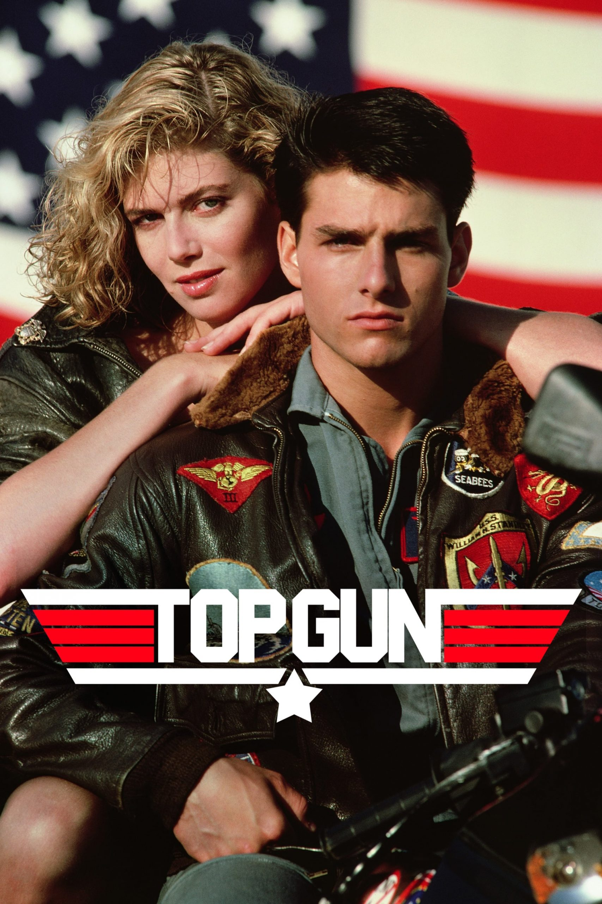
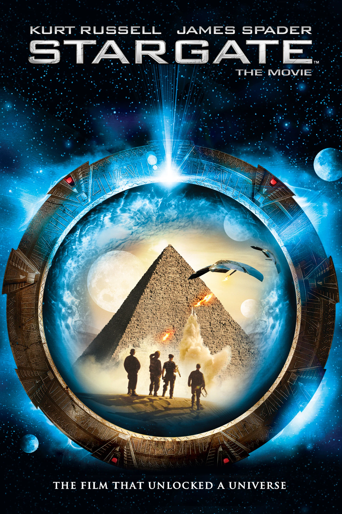
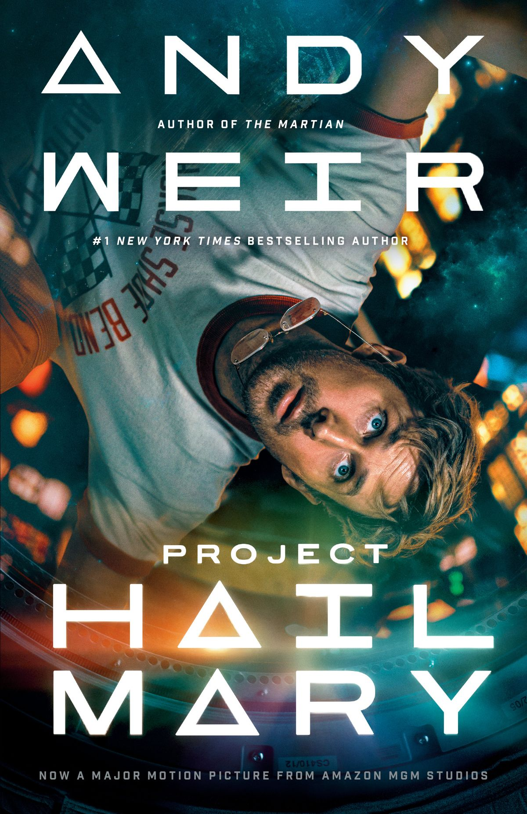
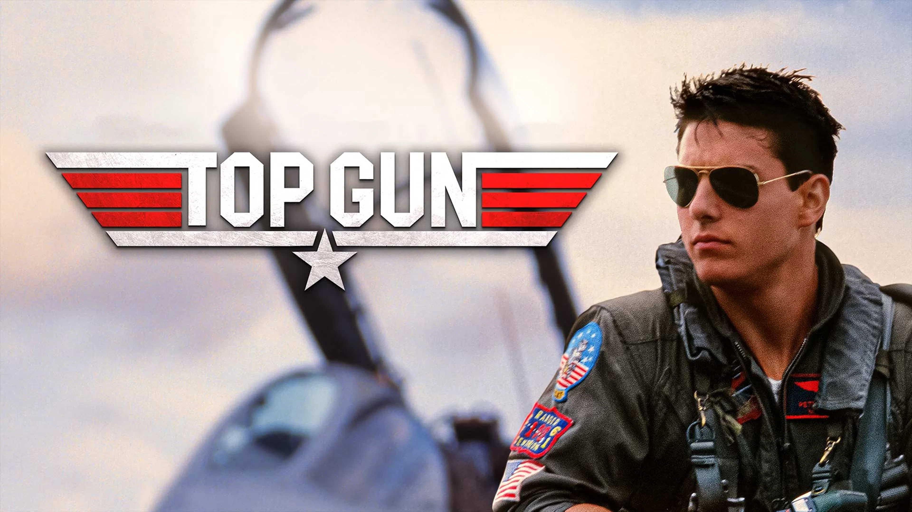
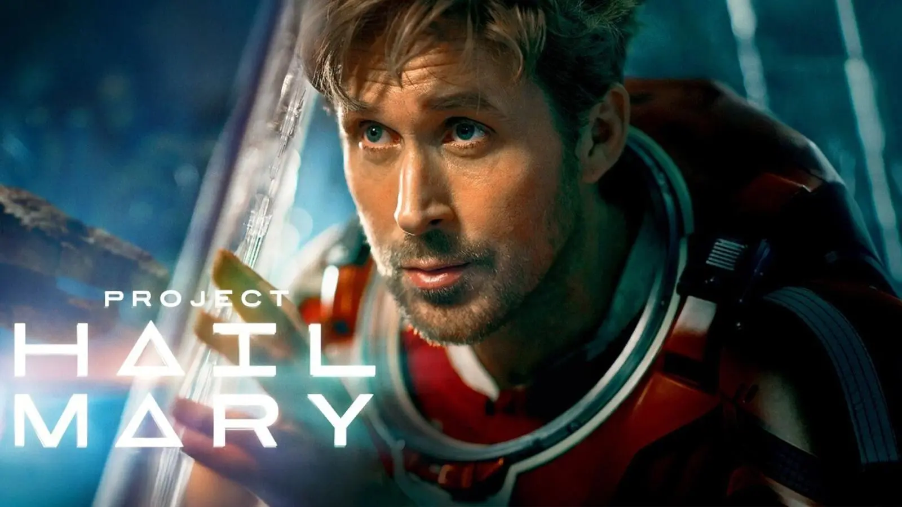

GENRE: Action/Adventure RUNTIME: 1hr 49min RATING:
SYNOPSIS-
The Top Gun Naval Fighter Weapons School is where the best of the
best train to refine
their elite flying skills. When hotshot fighter
pilot Maverick (Tom Cruise) is sent to the
school, his reckless
attitude and cocky demeanor put him at odds with the other pilots,
especially the cool and collected Iceman (Val Kilmer). But Maverick
isn't only competing
to be the top fighter pilot, he's also fighting
for the attention of his beautiful flight instructor,
Charlotte
Blackwood (Kelly McGillis).
GENRE: Action/Adventure RUNTIME: 2hr 1min RATING:
SYNOPSIS-
In 1928, in Egypt, a strange device is found by an expedition. In
the present days, the
outcast linguist Dr. Daniel Jackson is invited
by a mysterious woman to decipher an
ancient hieroglyph in a
military facility. Soon he finds that the device was developed by
an advanced civilization and opens a portal to teletransport to
another planet. Dr. Jackson
is invited to join a military team under
the command of Colonel Jonathan 'Jack' O'Neil
that will explore the
new world. They find a land that recalls Egypt and humans in a
primitive culture that worship and are slaves to Ra, the God of the
Sun. But soon they
discover the secret of the mysterious "stargate".

GENRE: Action/Adventure RUNTIME: 2hr 36min RATING:
SYNOPSIS-
Middle school science teacher Ryland Grace (Ryan Gosling) wakes up
on a spaceship
light-years from home with no recollection of who he
is or how he got there. As his
memory returns, he begins to uncover
his mission: to solve the riddle of the mysterious
substance that is
causing the sun to die out. He must call on his scientific knowledge
and unorthodox ideas to save everything on Earth from extinction...
but an unexpected
friendship means he may not have to do it alone.